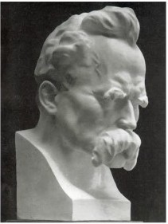

1875 Liberal Protestants - roots in Unitarian revolt against orthodox Calvinism - come into mainstream of US Protestantism; adapt religious ideas to modern culture (reconcile Christianity w/science); reject biblical literalism; stress ethical teachings of the Bible; ally w/“social gospel;” and urban revivalists; optimistic trust in community, focus on salvation and personal growth; accept evolution through “natural selection,” rejecting the “dogma of special creations.”
1879 Christian Scientists are founded by Mary Baker Eddy for those who believe faith can heal any illness.
1882 Nietzsche “God is dead!” True World theologies are debunked. True World theology (the idea that paradise exists, but not here) is of three types: Temporal (this world is the only reality, but is being guided and will be transformed in the future, yielding philosophies of history, like that of Marx), Monistic (individuals are identical to the universe, as in the Upanishads and transcendentalism and Zen), and Eternal (beside this earthly reality is a parallel Christian/Muslim/Buddhist heaven/hell).

For those who have cast off these psychological crutches, life is suddenly unhinged and seems meaningless. Mere material prosperity cannot solve the dilemma of meaning in life. People need the True World theories to protect them from the harsh realities of this world. Without them they sink into nihilism. According to Nietzsche, the conclusion that life is meaningless is mistaken: nihilism must be transcended. There are two types of nihilists: Passive Nihilists, for whom the rejection of the myth of an afterlife shatters their sense of order in the universe. Disoriented and searching for some meaning beyond narrow self-interest, they are often sucked into mass political movements. Active Nihilists, however, having realized the death of God, search within themselves for their unique meaning to life (their Will to Power); they “become who they are,” embrace adversity, and say “Yes!” to life.
The first step is to overcome the fear of non-conformity (like Emerson’s dictum, “Society punishes non-conformity.”) and laziness. A person requires an organizing idea. The specifics are not important, but one must look within to find one’s passion, one’s unique goal, one’s Will to Power. Adversity, far from being a cause for despair, is the very stuff of growth and life. Lasting happiness arises not through material wealth, or through following a religious phantasm, but only through struggle to achieve one’s self-appointed goal.
1883 Wellhausen develops the documentary hypothesis, a historical-critical method whereby the Bible is shown to be a text written and often edited by humans at various times.
1900 20th century New Atheists criticize the violence, irrationality, and intolerance of religion.
1902 Capitalist Christianity: "Coal mining is a business, not a religious, sentimental, or academic proposition. The rights and interests of the laboring man will be protected and cared for not by the labor agitators, but by the Christian men, to whom God in His infinite wisdom has given control of the property interests of the country." George F. Baer, President Philadelphia and Redding Coal and Iron Co.
~~~~~~~~